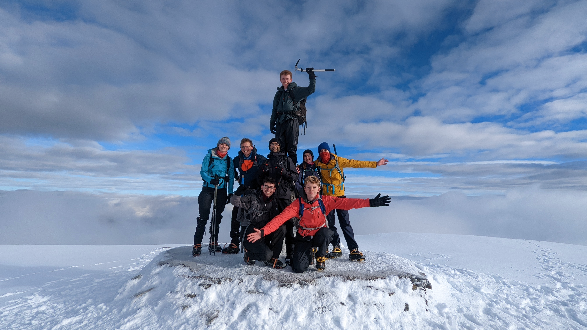

Meet Sam
Sam has a track record of bring people together to tackle big problems. As a community organizer he helped found Better Transit, a rapidly growing transit advocacy outfit helping shaping regional transit priorities, for transit riders.
Prior to running for office, Sam has been key to a number of projects, including the creation of the bike valet service currently operated by Capital Bike. Most recently, he worked for several transportation nonprofits including the BC Cycling Coalition, where he created and administered a granting program combatting bike theft. He's lived, worked, studied, and played in and around Oak Bay for since since 2011. This is his home.
In addition to being a trained community organizer and permaculturalist, Sam completed an Honours Bachelor of Arts from the University of Victoria. He's served on a series of non-profit boards, including Better Transit YYJ, the Island Aikido Society, and the University of Victoria Students' Society. He also served on the University of Victoria Senate, the body responsible for academic governance. He also loves to dance swing and salsa, and stays active by hiking, running, cycling, and aikido.